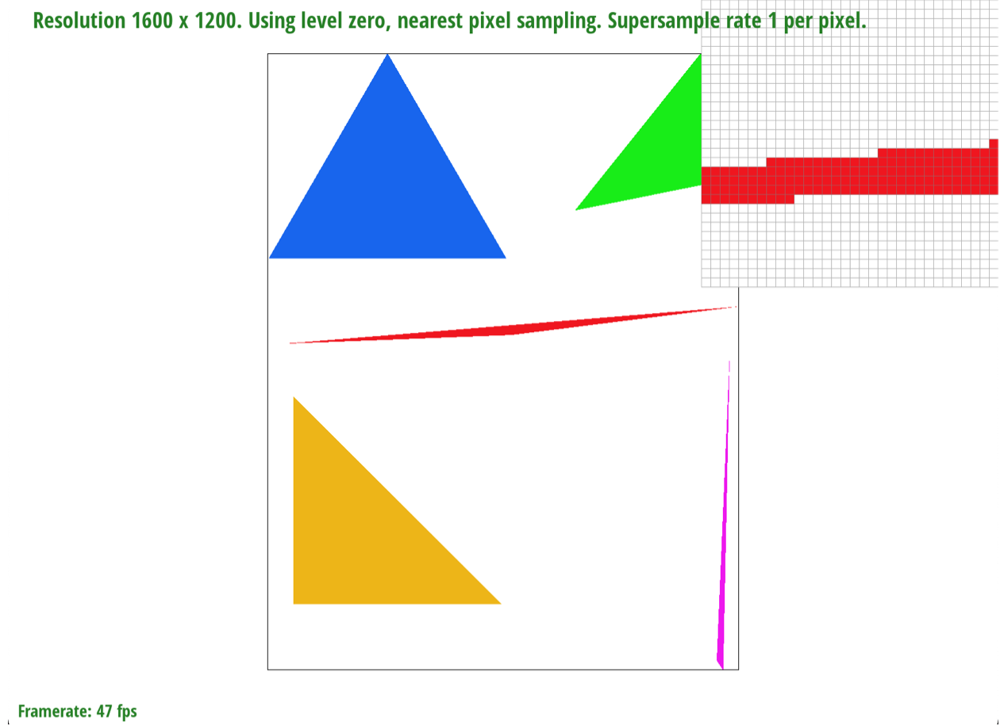
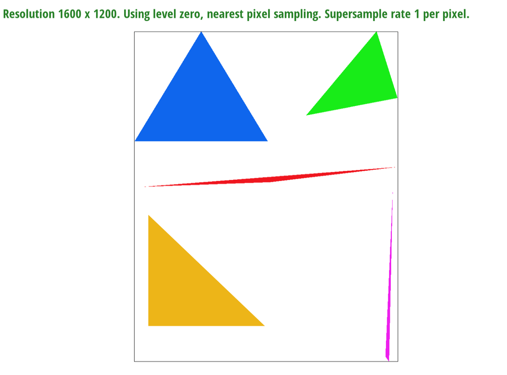
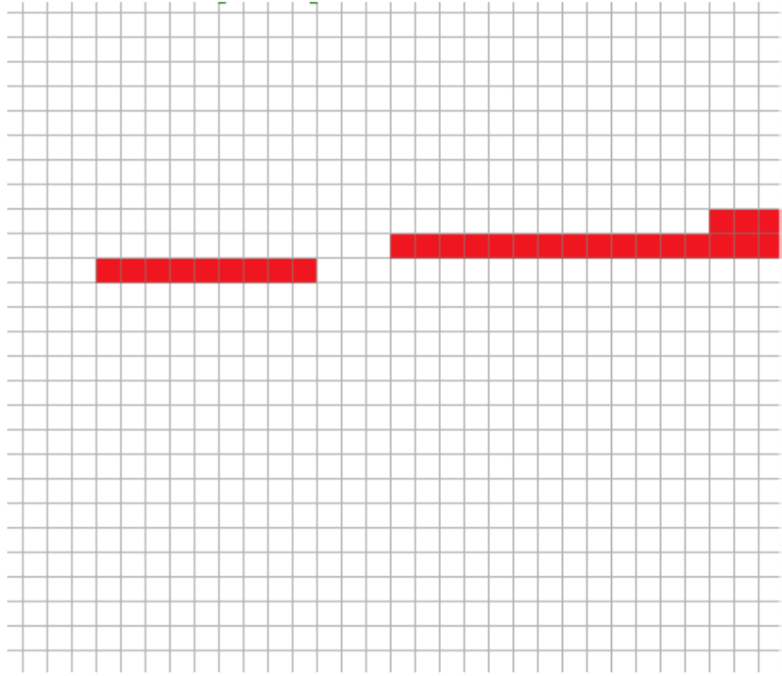
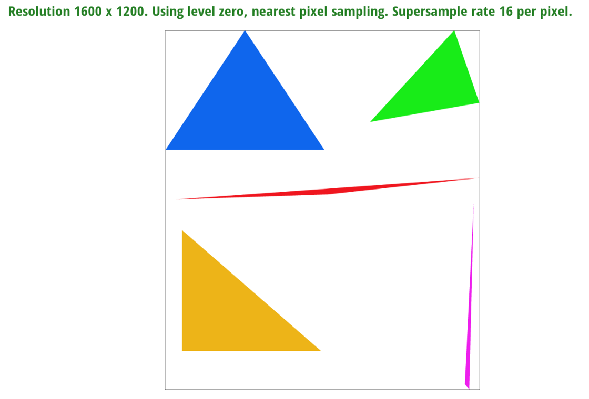
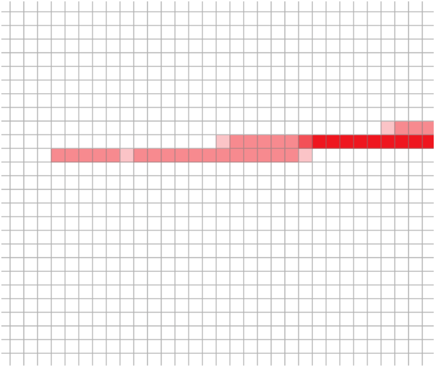
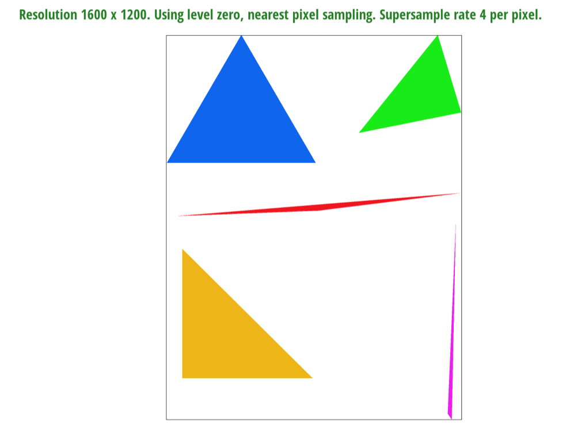
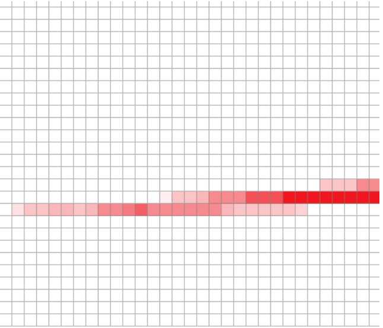
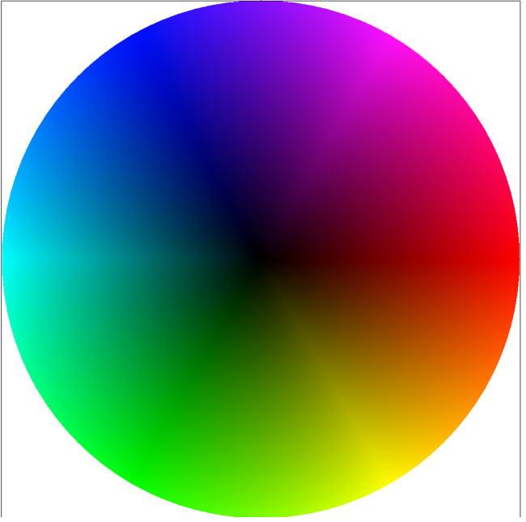

We rasterize our triangle by initially getting the bounding box of the triangle so we get the min and max of the x and y coordinates. Then, we loop through the pixels and calculate dXi and dYi and get the L(x,y) for each three points that we have received and check whether or not all the line equations are all less than 0 or greater than 0. If so, then we call on fill_pixel and fill in that pixel. This is simply just looping through each pixel within the bounding box of the triangle, and then we loop through the sample rates within each pixel, and check if it is in the triangle using the L(x,y) and if so, then we fill it in.
Supersampling is useful for smoother edges and more accurate coloring for pixels. If we incorporate a sample rate of 4, then for each pixel, there would be 4 more pixels and depending on how many pixels are included within the triangle, the pixel is either more of a dark or solid color or a lighter color for when less inner pixels are included. Modifications we added to the rasterization pipeline is making sure to check each pixel for the set supersampling we decided to do. For example, for a sample rate of 4, we need to loop through 4 more times (2 x 2) in each pixel to designate the color we fill each pixel with. At each super sample location of a pixel, we run the three line test that we had learn in lecture to decide whether the particular location should be filled or not. We also used our framebuffer to display the pixel color, which is similar to the sample buffer, but for each index of sample buffer, the frame buffer would contain the rgb value.
For a sample rate of 1 per pixel, these results are from using a sample rate of 1 per pixel so it would be the least accurate and simply fill in the pixel if its center is in the triangle.
 For a sample rate of 4 per pixel, these results have a lighter shade in certain pixels. If we use a sample rate of 4 per pixel, we must think like there are 4 separate pixels inside. The more of those pixels that are in the triangle, the darker the pixel gets shaded in.
 For a sample rate of 16 per pixel, the results must have a very wide variety of shading in the pixels. There would be 16 pixels within each pixel and so this would be much more accurate of a picture and the edges would be a lot smoother than if we used a sample rate of 1.
 With a series of additional transformations via translate, rotate, and scale, we were able to change our robot to doing a handstand after changing his clothes color.
To me and my partner, we essentially view Barycentric coordinates as a method to indicate a certain position or point within a triangle using three weights or scalars. (This image from the lecture (along with the equations) was the main resource I used for completing this task. Not only did it clearly explain what I needed to find and how to find the alpha, beta, and gamma values, but it also provided insight as to how these values are used and how they are important in modifying colors, location, texture coordinates, etc.
The way we viewed pixel sampling is the method of transitioning from the x-y coordinates of the pixels to the u-v texel of the textures. Because these two don’t exactly match up, we can use different sampling methods to obtain our desired texture. In bilinear, we use the 4 closest u-v texels and derive the weighted average of these 4 texels while sample nearest just finds the closest texel by rounding the coordinates to one of the 4 texels that are the closest to the current coordinates.